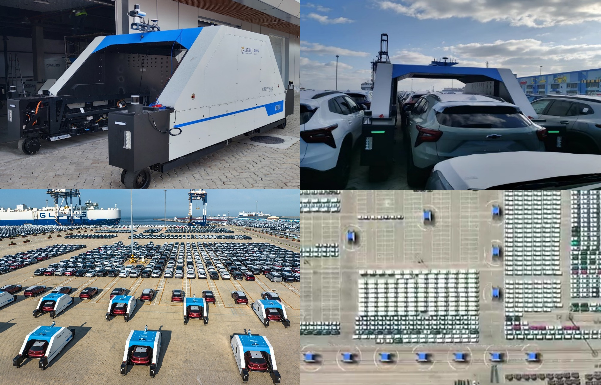
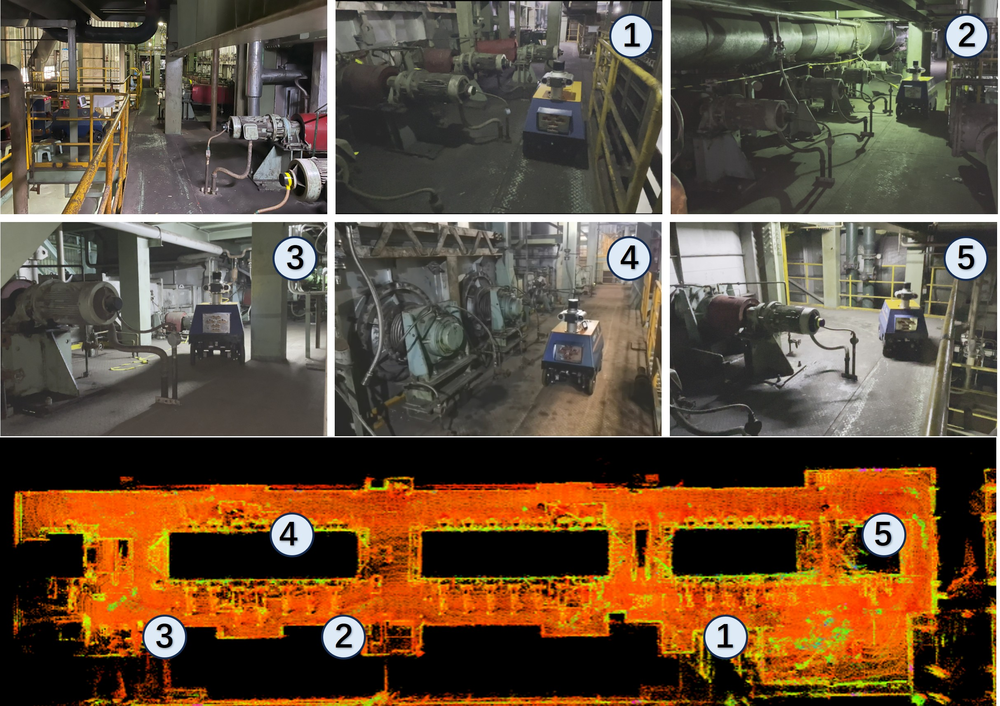
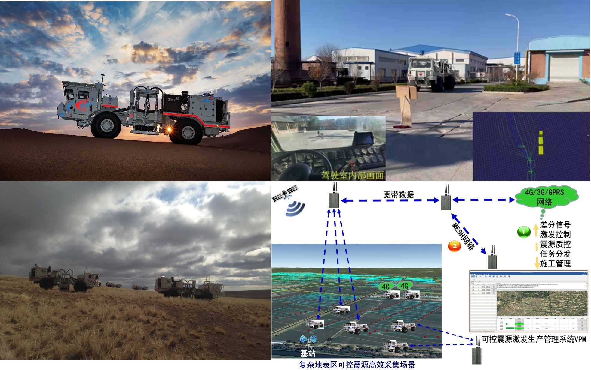
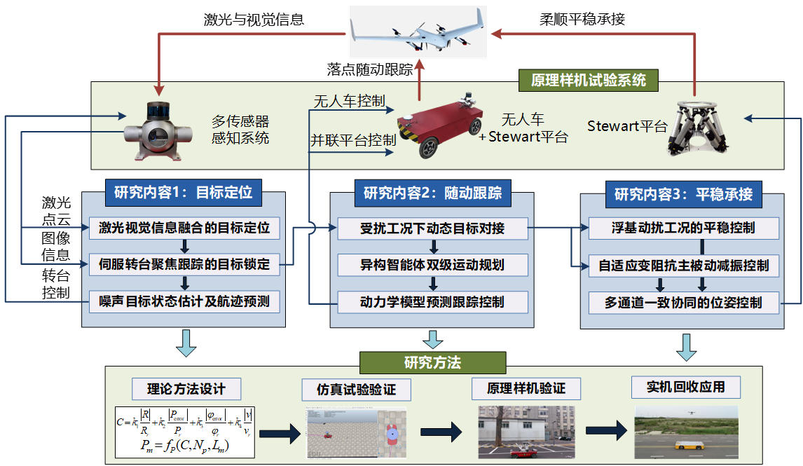
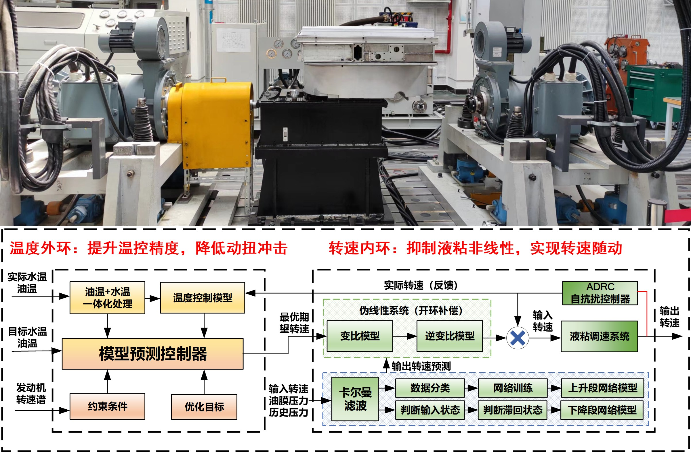
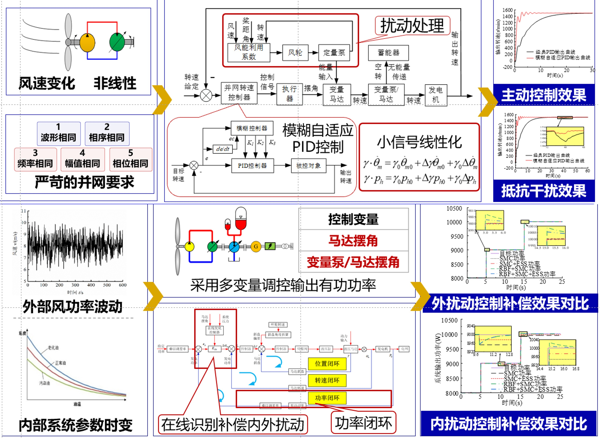
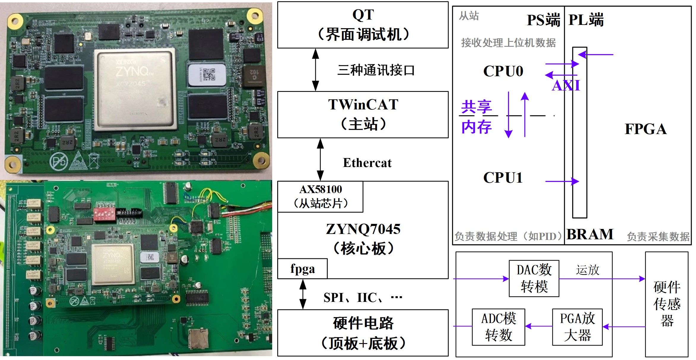
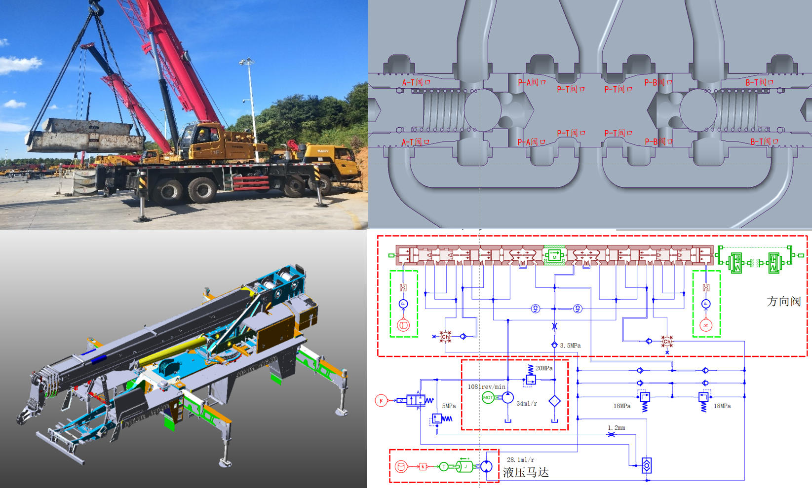
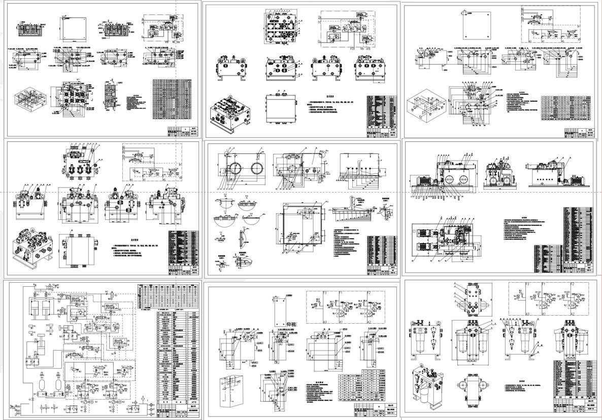

|
Projects
Research and Application of Full-Process Intelligent Ro-Ro Key Technologies Based on Commercial Vehicle AT-AGV and Multi-Story Parking Structure
|
 |
University-Enterprise Cooperation Project | 2023.06 – 2025.06
Abstract: With the rapid development of smart port infrastructure, traditional ro-ro terminals relying on manual operations can no longer meet the demands for efficiency, cost-effectiveness, and standardization, driven by increasing throughput, labor shortages, and growing operational complexity. To address these challenges, this project designs and deploys an autonomous robotic transfer system for the loading and unloading of heavy commercial vehicles. The system integrates centimeter-level precision positioning and control for high-accuracy operation, adaptive multi-mode motion planning and obstacle avoidance algorithms with four-wheel steering, and multi-robot scheduling coordinated with port terminal systems. The system has been successfully deployed at the ro-ro terminal of Yantai Port, Shandong, validating its reliability and efficiency in real-world scenarios and demonstrating the feasibility and value of intelligent robotics in advancing terminal automation.
Responsibilities: Responsible for the design and on-site deployment of docking and path-tracking algorithms, with long-term on-site presence to organize and participate in field commissioning; led the design and simulation verification of multi-robot scheduling and planning algorithms; handled the writing and organization of project documentation, and secured approval as principal investigator for one key project under the Graduate Research Level and Innovation Capability Enhancement Program based on this work.
[Video]
|
Equipment Inspection Robot for Continuous High-Temperature Annealing Production Line at Baosteel, Shanghai
|
 |
University-Enterprise Cooperation Project | 2024.01 – 2024.12
Abstract: This project focuses on intelligent inspection technology for the water-cooled bearing housings of furnace rolls and related high-temperature equipment in continuous annealing furnaces. Traditional manual inspection suffers from low efficiency, harsh working environments, and high safety risks, making timely and accurate detection of equipment anomalies difficult. The project develops an autonomous inspection robot for the furnace zone, integrating multi-sensor perception, localization, planning, and control to achieve autonomous patrolling, condition monitoring, and anomaly detection, thereby improving the accuracy, real-time performance, and automation level of equipment monitoring while ensuring personnel safety and enhancing operation and maintenance efficiency.
Responsibilities: Organized project initiation materials and conducted solution planning; proposed path planning and control algorithms for the inspection robot; organized and completed multiple rounds of on-site deployment and commissioning to validate system performance and stability; responsible for writing the project conclusion report, organizing experimental data, and consolidating research outcomes to ensure the systematic documentation and transferability of project results.
[Video]
|
Research and Development of Advanced Driver Assistance System for Vibroseis Vehicles in Complex Terrains
|
 |
University-Enterprise Cooperation Project | 2025.01 – 2025.06
Abstract: In response to the high operational costs and low efficiency of traditional field operations for special-purpose vehicles, this project, in collaboration with industry partners, develops an advanced driver assistance system for vibroseis vehicles operating in challenging environments such as mines, deserts, and unstructured terrains. The system integrates multi-sensor SLAM for robust localization, real-time terrain perception and autonomous navigation control, multi-vehicle coordination, and excitation point planning for automated operations. It significantly enhances operational safety, efficiency, and standardization under harsh field conditions, demonstrating strong applicability for intelligent transformation in geophysical exploration scenarios.
Responsibilities: Participated in the development of a multi-vehicle cooperative convoy framework; contributed to the design of multi-vehicle formation and path planning algorithms, with validation through simulation and hardware-in-the-loop experiments; responsible for the preparation and organization of technical proposals and project documentation.
[Video]
|
Research on Key Control Methods for Ground Dynamic UAV Recovery Based on Unmanned Vehicle and Stewart Platform Collaboration
|
 |
National Natural Science Foundation of China (General Program) | 2023.01 – 2024.06
Abstract: Using the BIT Youlong mobile robot, independently developed by the laboratory, as the platform, this project designs and implements an intelligent mobile airport for unmanned aerial vehicles. By mounting a Stewart intelligent platform on the mobile robot and integrating UAV position sensing, path planning, path tracking, and mobile docking technologies, the system provides a flexible and stable takeoff and landing solution for UAVs, enabling autonomous, safe, and precise recovery and management, and offering reliable technical support for air-ground collaborative operations.
Responsibilities: Responsible for drafting and revising the project application report; implemented a high-precision path-tracking algorithm on the mobile robot platform to ensure stable operation of the unmanned vehicle, and contributed to the reliable overall system recovery and the successful realization of air-ground collaborative operations.
|
Development of Speed Control System for Hydraulic Viscous Clutch
|
 |
National Defense Science and Industry Bureau Fundamental Research Project | 2022.09 – 2023.12
Abstract: The hydraulic viscous clutch exhibits strong nonlinearity and large hysteresis characteristics due to the coupled effects of input speed, lubricant temperature, pressure, and other factors. Under disturbances such as engine speed fluctuations and environmental variations, conventional linear control methods struggle to adapt effectively, resulting in limited speed regulation range, significant output speed fluctuations, and intense torque shocks. To address these challenges, the project develops a multi-parameter cooperative precision speed control method that enhances dynamic response and operational stability under complex operating conditions, expands the effective speed regulation range, suppresses speed fluctuations and torque shocks, and achieves smooth stepless speed regulation along with precise thermal management of the power compartment.
Responsibilities: Responsible for modeling and characteristic analysis of the hydraulic viscous speed regulation system based on experimental data, and for refining and optimizing the multi-parameter coupling model; proposed a three-loop cooperative control strategy integrating water temperature, oil pressure, and rotational speed; also undertook the writing of project conclusion materials, organization of experimental results, and consolidation of research outcomes.
|
Wind Turbine Characteristics of Energy Storage Hydraulic Wind Turbine and Intelligent Control of Active Power
|
 |
Master's Thesis | 2023
Abstract: Taking the energy-storage hydraulic wind turbine generator system as the research object, this thesis analyzes the operating principles and control requirements of the unit, establishes mathematical models and state-space equations for the wind turbine and main transmission system, and evaluates the effects of multi-source disturbances on torque and active power. A Fuzzy-PID control strategy is proposed to achieve intelligent grid-connected speed regulation. Sliding mode control combined with an RBF neural network is introduced for autonomous compensation and fast active power control, while an energy storage subsystem is incorporated to enhance control responsiveness. The feasibility and control accuracy of the proposed strategies under multiple disturbances are validated on a 30 kW hydraulic wind power experimental platform, providing experimental support for intelligent active power control of hydraulic wind turbine generator systems.
[Paper]
|
Development of Servo Channel Control Module
|
 |
University-Enterprise Cooperation Project | 2021.09 – 2022.03
Abstract: This project focuses on the development of an electro-hydraulic servo channel control module, realizing functions including servo motion control, data processing, sensor signal acquisition, servo valve driving, and communication transmission. The module is integrated and deployed within a dedicated chassis, supporting independent multi-channel control for real-time control and data interaction in high-precision electro-hydraulic servo systems.
Responsibilities: Participated in the driver development for key chips including AD5754, PGA280, ADS127L01, and CH423; completed hardware testing and functional verification using serial debugging tools, and authored debugging plans and test reports; conducted functional simulation and joint debugging using Vivado, and assisted in code issue localization and system stability optimization.
|
Theoretical Research and Industrialization Demonstration of Hydraulic Wind Turbine Generator System
 |
University-Enterprise Cooperation Project | 2021.05 – 2021.09
Abstract: This project involves the construction of China's first hydraulic wind power demonstration prototype. Centered on grid-connected speed control and power regulation, the project encompasses control theory research, algorithm development, and system integration and commissioning, breaking through the key technology of stable grid connection for hydraulic transmission wind turbine generator systems and achieving stable grid-connected power generation operation.
Responsibilities: Participated in the on-site electrical system setup and wiring inspection of the 30 kW hydraulic wind turbine generator unit; designed and implemented grid-connected speed regulation and active power control based on MATLAB and dSPACE ControlDesk, supporting stable power generation of the unit, and participated in system testing and performance verification.
|
Ground System of Hydraulic Wind Turbine Generator Unit at Nanjing Institute of Technology
 |
University Strategic Cooperation Project | 2021.01 – 2021.05
Abstract: This project involves the construction of a research and experimental platform for hydraulic wind turbine generator units, integrating wind turbine simulation, hydraulic main transmission, main control, and generator grid-connection systems. The wind turbine characteristics are simulated based on a servo motor, and the hydraulic main transmission system is constructed using a fixed-displacement pump and variable-displacement motor. The main control system employs a PLC and a Moog controller to achieve logic control and closed-loop speed/power regulation, along with generator grid-connected operation. The platform supports system modeling, control strategy validation, and performance testing.
Responsibilities: Implemented rotational speed control of the servo motor via the Moog controller using MACS software in collaboration with control engineers; completed coordinated control of the grid-connection cabinet and Shark 200 to achieve safe grid connection and active power generation control of the test bench; conducted data acquisition and processing of system speed and grid-connected active power, carried out experimental analysis, and completed the project acceptance report.
|
Simulation Research on Slewing Performance Improvement of Truck-Mounted Crane
|
 |
University-Enterprise Cooperation Project | 2020.06 – 2020.12
Abstract: A mechatronic integrated simulation platform for a truck-mounted crane was developed to analyze instability issues during the slewing process. Based on given mechanism models and experimental data, a high-fidelity simulation model was established and iteratively optimized. On this basis, the mechanism underlying slewing instability was analyzed, key sources of the problem were identified, and the effectiveness of improvement measures was validated on the simulation platform. Final verification was completed through full-machine experiments.
Responsibilities: Collaborated with hydraulic engineers to complete hydraulic system modeling in AMESim and performed equivalent processing of the mechanical model to achieve mechatronic co-simulation; participated in the formulation and implementation of bench and full-machine test plans, and completed data acquisition and comparative analysis; identified the source of pressure pulsation during the slewing process based on experimental data and proposed a slewing stability control strategy.
|
Design of a 5000 kN Powder Compaction Hydraulic Press System
|
 |
Bachelor Thesis | 2019 – 2020
Abstract: Driven by industrial growth and policy initiatives in China, the demand for high-quality powder compaction products has been continuously increasing. This project presents the complete design of a 5000 kN powder compaction hydraulic press system, covering process flow analysis, hydraulic schematic design, and component selection. The valve system is organized into three valve blocks with full assembly design, while the oil tank and pump station adopt a horizontal layout to facilitate installation and maintenance. The final deliverables include a comprehensive set of engineering drawings covering the hydraulic schematic, valve block components and assemblies, pump station, and oil tank, achieving a complete system design and visualization that ensures efficient and reliable hydraulic system operation.
|
Pneumatic Transport Robot
 |
Mechatronic System Design Course Project | 2019
Abstract: This novel pneumatic crawling robot is actuated by compressed air and controlled via a PLC, enabling forward, backward, left-turn, right-turn, and automatic line-following functions. The robot consists of a locomotion structure, a support structure, and a steering structure, completing its motion cycle through coordinated actuation of the support and locomotion cylinders, with different motion directions achieved by varying the actuation sequence. The control system manages 13 inputs (cylinders, color sensors, directional and mode buttons) and 6 outputs (solenoid directional control valves). The design tightly integrates mechanical structure, pneumatic actuation, and PLC control, resulting in a novel, easy-to-operate system with strong controllability and automation capability.
Responsibilities: Responsible for scheme optimization and technical improvement within the team, undertook physical assembly, program development, and equipment debugging, authored patent documentation, and presented the project at the final defense and result review.
[Video]
|
Novel Non-Contact Thickness Measurement System
 |
Undergraduate Innovation and Entrepreneurship Training Program | 2018 – 2019
Abstract: Strip thickness measurement is a critical technology in high-end cold-rolled steel production. To address the insufficient accuracy of the existing structure, analysis revealed that the primary source of error was the misalignment of the strip itself. Based on this finding, a multi-sensor slider-rail measurement mechanism was designed, in which high-precision laser sensors positioned above and below the strip perform synchronized thickness measurements. The system achieves signal digitization, real-time transmission, and multi-point thickness acquisition, enabling high-precision reconstruction of the strip's cross-sectional profile and improving both measurement accuracy and stability.
Responsibilities: As project leader, led the overall scheme planning and technical route design, responsible for the optimization of the mechanical structure and measurement system, organized on-line debugging and experimental validation, authored technical reports and research documentation, and presented the project at the final defense and result review.
[Video]
|
|